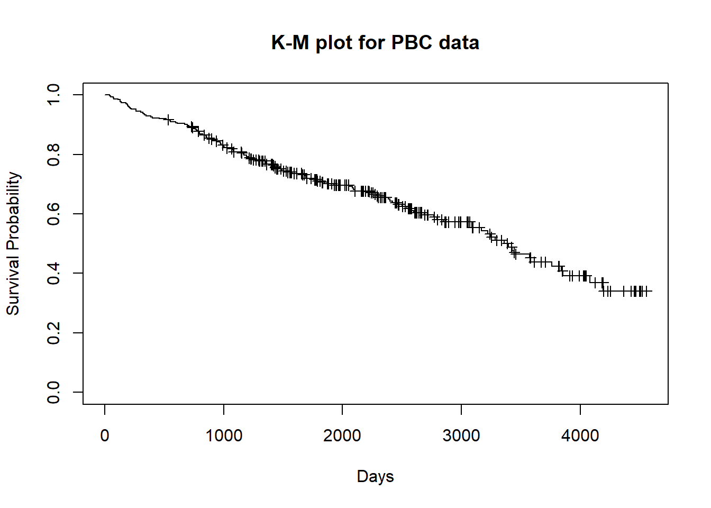
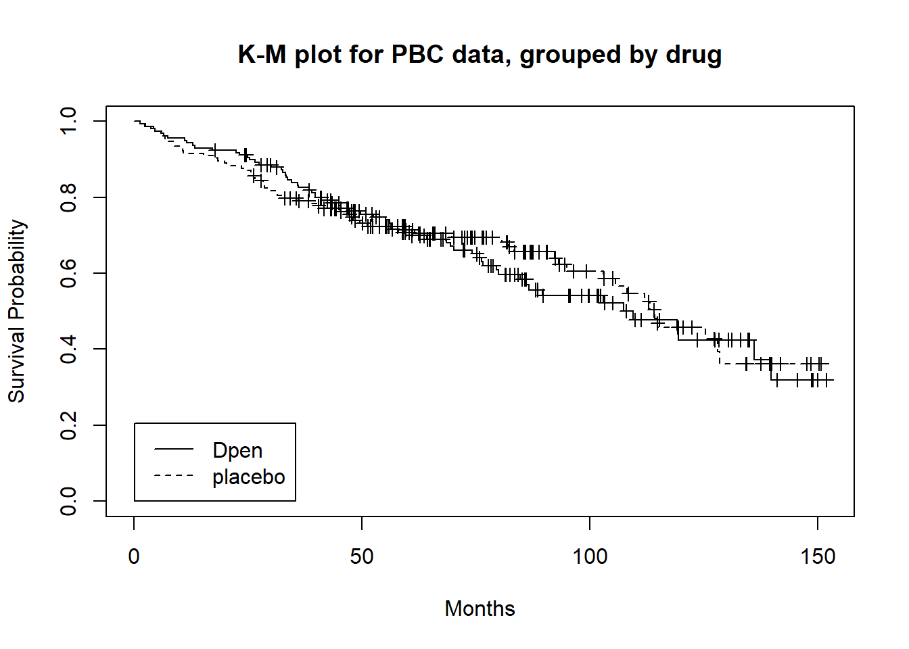
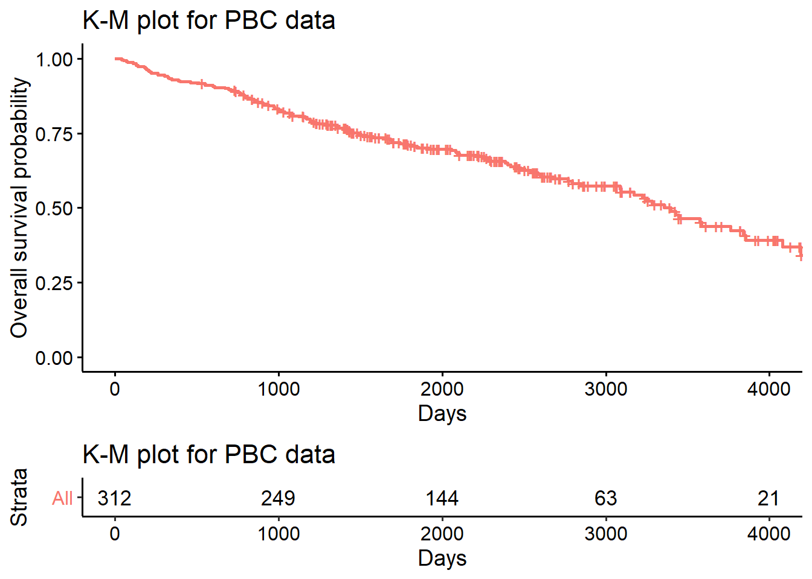
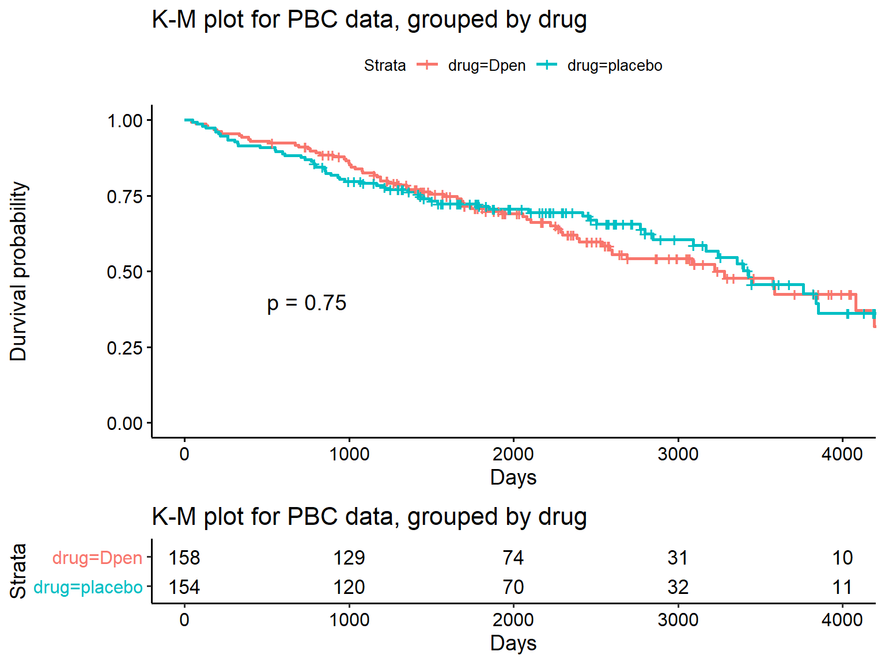
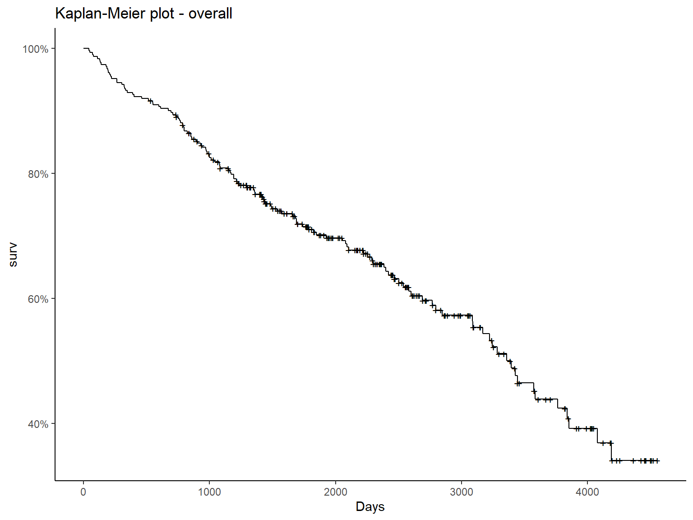
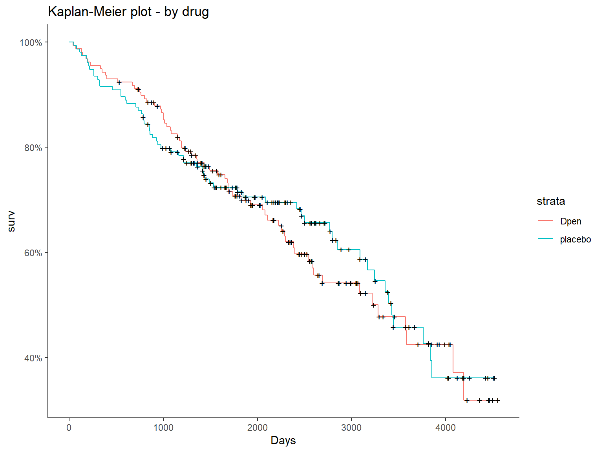
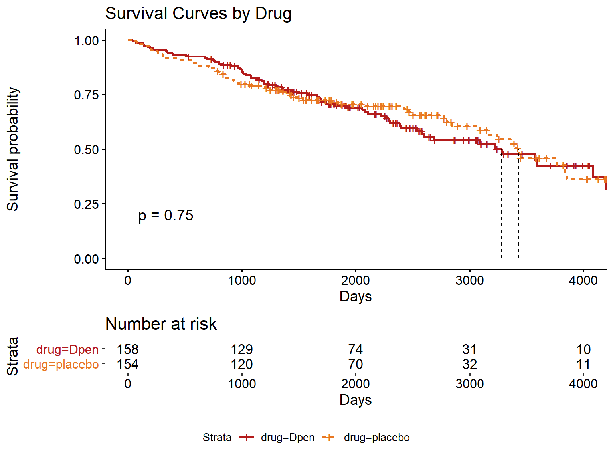

Primary Biliary Cirrhosis (PBC) Dataset
This data is from the Mayo Clinic trial in primary biliary cirrhosis (PBC) of the liver conducted between 1974 and 1984. A total of 424 PBC patients, referred to Mayo Clinic during that ten-year interval, met eligibility criteria for the randomized placebo controlled trial of the drug D-Penicillamine. The first 312 cases in the data set participated in the randomized trial and contain largely complete data. The additional 112 cases did not participate in the clinical trial, but consented to have basic measurements recorded and to be followed for survival. Six of those cases were lost to follow-up shortly after diagnosis, so the data here are on an additional 106 cases as well as the 312 randomized participants.
Data definitions:
- age: in years
- albumin: serum albumin (g/dl)
- alk.phos: alkaline phosphotase (U/liter)
- ascites: presence of ascites
- ast: aspartate aminotransferase, once called SGOT (U/ml)
- bili: serum bilirunbin (mg/dl)
- chol: serum cholesterol (mg/dl)
- copper: urine copper (ug/day)
- edema: 0 no edema; 0.5 untreated or successfully treated; 1 edema despite diuretic therapy
- hepato: presence of hepatomegaly or enlarged liver
- id: case number
- platelet: platelet count
- protime: standardised blood clotting time
- sex: m/f
- spiders: blood vessel malformations in the skin
- stage: histologic stage of disease (needs biopsy)
- status: status at endpoint, 0/1/2 for censored, transplant, dead
- time: number of days between registration and the earlier of death, transplantion, or study analysis in July, 1986
- trt: 1/2/NA for D-Penicillamine, placebo, not randomized
- trig: triglycerides (mg/dl)
R packages:
library(survival)
library(tidyverse)
library(survminer)
library(ggfortify)
library(kableExtra)
library(dotwhisker)
1. Update data for analysis
Let’s exclude patients who were not randomized to a drug group and recode some variables.
pbcData <- pbc %>%
filter(!is.na(trt)) %>%
select(id, time, status, trt,sex, age,bili, chol, albumin, copper, trig, protime) %>%
mutate(drug =fct_recode(factor(trt), Dpen = "1", placebo = "2"),
censored = fct_recode(factor(status), Censored = "0", `Censored due to liver treatment` = "1", Dead = "2"))
head(pbcData)
## id time status trt sex age bili chol albumin copper trig protime drug
## 1 1 400 2 1 f 58.76523 14.5 261 2.60 156 172 12.2 Dpen
## 2 2 4500 0 1 f 56.44627 1.1 302 4.14 54 88 10.6 Dpen
## 3 3 1012 2 1 m 70.07255 1.4 176 3.48 210 55 12.0 Dpen
## 4 4 1925 2 1 f 54.74059 1.8 244 2.54 64 92 10.3 Dpen
## 5 5 1504 1 2 f 38.10541 3.4 279 3.53 143 72 10.9 placebo
## 6 6 2503 2 2 f 66.25873 0.8 248 3.98 50 63 11.0 placebo
## censored
## 1 Dead
## 2 Censored
## 3 Dead
## 4 Dead
## 5 Censored due to liver treatment
## 6 Dead
2. Generate Kaplan-Meier estimates
We will use survfit() to generate overall K-M estimates and estimates across drugs:
# Overall estimates
surv.all <- survfit(Surv(time, censored == "Dead") ~ 1, data = pbcData)
# Estimates across drug
surv.bydrug <- survfit(Surv(time, censored == "Dead") ~ drug, data = pbcData)
We can use the generic summary() function to generate more detailed output of our K-M estimates. By default, censored events are not included in the ouput, but can be by specifying censored = TRUE.
3. Generate Kaplan-Meier plots
3.1 base R
Using the plot() function in base R:
Overall
plot(surv.all, xlab = "Days", ylab = "Survival Probability", conf.int = FALSE,
mark.time = TRUE,
main = "K-M plot for PBC data")

By Drug
plot(surv.bydrug, conf.int=FALSE, xscale = 30,
col= "black", lty = c(1, 2),
pval = TRUE, pval.coord = c(500, 0.4),
mark.time = TRUE,
xlab = "Months", ylab = "Survival Probability",
main = "K-M plot for PBC data, grouped by drug")
legend(5, 0, col = "black", lty = c(1, 2), legend = levels(pbcData$drug),
xjust = 0, yjust = 0)

3.2 Kaplan-Meier plot - survminer
Using ggsurveplot() from survminer package:
Overall
ggsurvplot(
fit = surv.all,
xlab = "Days",
ylab = "Overall survival probability",
risk.table = TRUE,
conf.int = FALSE,
censor = TRUE,
legend = "none") + labs(title = "K-M plot for PBC data")

By Drug
ggsurvplot(
fit = surv.bydrug,
xlab = "Days",
ylab = "Durvival probability",
pval = TRUE, pval.coord = c(500, 0.4),
censor = TRUE,
risk.table = TRUE,
conf.int = FALSE) + labs(title = "K-M plot for PBC data, grouped by drug")

3.3 Kaplan-Meier plot - ggplot2
Overall
ggplot2::autoplot(surv.all, conf.int = FALSE, main = "Kaplan-Meier plot - overall", xlab = "Days") + theme_classic()

By Drug
ggplot2::autoplot(surv.bydrug, conf.int = FALSE, main = "Kaplan-Meier plot - by drug", xlab = "Days") + theme_classic()

3.4 Customize plots
res <- ggsurvplot(surv.bydrug, size = 1, # change line size
linetype = "strata", # change line type by groups
palette = c("#B31B1B", "#E87722"), # custom color palette
conf.int = FALSE, # hide confidence interval
pval = TRUE, # Add p-value,
legend = "bottom",
risk.table = TRUE,
surv.median.line = "hv",
xlab = "Days"
)
res$table <- res$table + theme(axis.line = element_blank())
res$plot <- res$plot + labs(title = "Survival Curves by Drug")
print(res)

6. Multivariable Cox proportional hazards regression model
We will perform a multivariable cox proportional hazards regression model using the following covariates: age, sex, and drug treatment.
The Cox regression model is a semi-parametric model that can be used to fit univariable and multivariable regression models that have survival outcomes.
coxph.m1 <- coxph(Surv(time, censored == "Dead") ~ age + sex + drug, data = pbcData)
summary(coxph.m1)
## Call:
## coxph(formula = Surv(time, censored == "Dead") ~ age + sex +
## drug, data = pbcData)
##
## n= 312, number of events= 125
##
## coef exp(coef) se(coef) z Pr(>|z|)
## age 0.038820 1.039583 0.008995 4.316 1.59e-05 ***
## sexf -0.337659 0.713438 0.238873 -1.414 0.157
## drugplacebo 0.062647 1.064651 0.181853 0.344 0.730
## ---
## Signif. codes: 0 '***' 0.001 '**' 0.01 '*' 0.05 '.' 0.1 ' ' 1
##
## exp(coef) exp(-coef) lower .95 upper .95
## age 1.0396 0.9619 1.0214 1.058
## sexf 0.7134 1.4017 0.4467 1.139
## drugplacebo 1.0647 0.9393 0.7454 1.521
##
## Concordance= 0.623 (se = 0.026 )
## Likelihood ratio test= 22.53 on 3 df, p=5e-05
## Wald test = 23.22 on 3 df, p=4e-05
## Score (logrank) test = 23.43 on 3 df, p=3e-05
anova(coxph.m1)
## Analysis of Deviance Table
## Cox model: response is Surv(time, censored == "Dead")
## Terms added sequentially (first to last)
##
## loglik Chisq Df Pr(>|Chi|)
## NULL -639.97
## age -629.71 20.5053 1 5.947e-06 ***
## sex -628.76 1.9082 1 0.1672
## drug -628.70 0.1186 1 0.7306
## ---
## Signif. codes: 0 '***' 0.001 '**' 0.01 '*' 0.05 '.' 0.1 ' ' 1
7. Present results
broom::tidy(
coxph(Surv(time, censored == "Dead") ~ age + sex + drug, data = pbcData),
exp = TRUE) %>%
rename(`Adjusted Hazard Ratio` = estimate,
`Standard Error` = std.error,
`P-value` = p.value,
`Lower 95% CI` = conf.low,
`Upper 95% CI` = conf.high) %>%
relabel_predictors(drugplacebo = "Placebo (vs. D-pen)",
Age = "Age",
sexf = "Female (vs. Male)"
) %>%
select(term, `Adjusted Hazard Ratio`, `Lower 95% CI`, `Upper 95% CI`, `P-value`) %>%
mutate_if(is.numeric, round, 2) %>%
kable() %>% kable_styling("striped")
|
term
|
Adjusted Hazard Ratio
|
Lower 95% CI
|
Upper 95% CI
|
P-value
|
|
Placebo (vs. D-pen)
|
1.06
|
0.75
|
1.52
|
0.73
|
|
Female (vs. Male)
|
0.71
|
0.45
|
1.14
|
0.16
|
|
age
|
1.04
|
1.02
|
1.06
|
0.00
|
References: